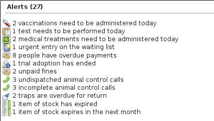

12 Stock Control
Animal Shelter Manager includes a stock control system for managing stores of drugs, food and other items.
Before using the module, you should set up locations for your stock under Settings->Lookup Data->Stock Locations. Locations help subdivide your stock to assist with the stock taking process. A useful convention (similar to account codes) is to use a separator for child locations so they appear together in lists. For example, you could create locations called "Office", "Office::Shelves" and "Office::Desk", which would all appear together in the list of available locations and be able to hold their own list of stock.
To view and add to current stock levels, go to Financial->Stock .

Listed are all stocks for all locations on the system. You can use the dropdown on the right-hand side to only show stock in a particular location. Stocks will be highlighted in red if their expiry date has passed (as well as an alert). Similarly, stocks will appear faded out if their balance has dropped to zero and there are no items left.
If you are familiar with the stock card approach to drug management, this is an electronic version of that system. With stock cards, each container gets a card (a stock record in ASM) that tracks how many items started and remain in that container, along with a note each time the stock was used.
12.1 Adding New Stock

Use the "New Stock" button to add a new stocked item. Each stocked item is assumed to be a container of "total" items as described by the "units" field. The "balance" field is the amount remaining in the container and will decrement as the stock is used. You can also set an expiry date and batch number for drugs and perishable goods. In addition, if you set a "quantity", this is the number of records to create if you have multiples of the same item.
So, for example, you have 5 boxes of metacam chewable tabs, each box contains 10 tabs.
Name: Metacam 1mg chewable tablet
Description: Box of 10 1mg chewable meloxicam tablets
Quantity: 5
Location: Stores
Units: 1mg chewable tablet
Total: 10
Balance: 10
Every time the level of a stock changes (the balance) or a stock is newly created, a "usage" record for that item is also created that explains why that stock has changed with a stock usage type/category. You can also add some comments.
The system will remember items you have previously entered and the name and unit fields will autocomplete suggested values for you as you type.
12.2 Using Stock (Manually)
To use stock, you can simply open up the stock record by clicking its name in the list of current stocked items and adjusting the balance. When you change the balance of an existing record, the usage fields will appear to prompt you to create a usage record to explain why this stock record has changed.
If the stock has expired and is to be thrown away, set the balance to zero and use the "wastage" usage type so that reports can calculate how much stock has been wasted. When loading stock screens and items for selection, any stocked items with zero balances will be hidden from view.
12.3 Using Stock (Medical, Tests and Vaccinations)
As a shortcut, when you are performing tests or administering vaccinations and medical items through the tabs on the animal record or via Medical->Test Book , Medical->Vaccination Book or Medical->Medical Book the system will prompt you to deduct stocks for the test/vaccination/treatment.
When you hit the "Give" or "Perform" button on any of those screens, a dialog will appear to prompt you for the date the test was performed or treatment/vaccination administered and usage information to decrement an appropriate stocked item.

However many treatments/vaccinations/tests were selected to be marked given or performed, only one stock deduction will be made so you should make sure the deduction covers all the selected items.
12.4 Stock Alerts
The system will produce alerts on the front screen when you have stocked items that have either expired or are due to expire in the next month.
